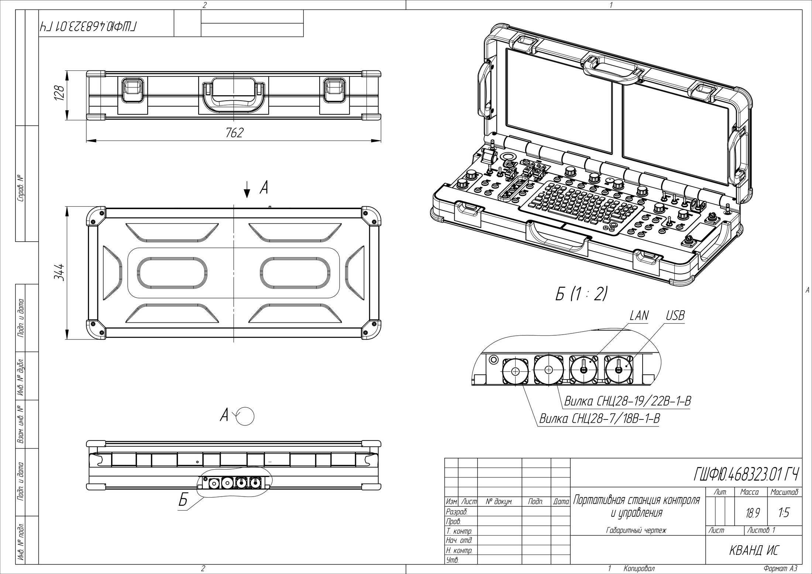

Портативная станция контроля и управления
|
Шифр ПСКУ ГШФЮ.468323.01 |
Доп. информация Чертеж (габаритный) |
Портативная станция контроля и управления (ПСКУ) представляет из себя защищенный компьютер с интегрированным программным обеспечением, используется для контроля и управления БПЛА, а также отображения транслируемого с борта видео в режиме реального времени. Помимо стандартной клавиатуры, ПСКУ оснащена джойстиками для управления БПЛА и полезной нагрузкой, а также большим количеством специальных элементов управления. Предназначена для одновременной работы оператора летательного аппарата и оператора полезной нагрузки.
{kind=link}
{kind=link}
{kind=link}
{kind=link}
{kind=link}
{kind=link}
Назначение
Портативная станция контроля и управления предназначена для проведения:
- предполетной подготовки БПЛА;
- предстартового контроля БПЛА;
- подготовки программ полета;
- тренировки оператора без проведения полета БПЛА.
ПСКУ обеспечивает:
- обмен с БПЛА телеметрической информацией в реальном времени;
- управление полезной нагрузкой;
- прием, отображение, запись, хранение и воспроизведение информации от полезной нагрузки на экранах мониторов в реальном времени;
- управление режимами полета и работы полезной нагрузки;
- подготовку полетного задания и загрузку его в бортовой комплекс;
- контроль технического состояния бортового комплекса БПЛА;
- предполётную и послеполётную проверку;
- определение координат целей в географических и полярных системах координат;
- управление выполнением полетной задачи;
- ведение протокола выполнения полетной задачи;
- моделирование выполнения полетной задачи.
Основные технические данные
| Параметры | Значения |
|---|---|
| Процессор | Intel i7-4600U (HASWELL) 64-bit dual core 2.1GHz (turbo boost up to 3.3GHz) |
| Чипсет | Mobile Intel 8 Series (Lynx Point) in MCP package |
| Оперативная память | 8 ГБ |
| Дисплей | 15" 1024 x 768, 1100 кд/м2 (2 шт.) |
| Жесткий диск | SSD 120 GB |
| Звуковая подсистема | Realtek ALC888-VC2 HD audio codec |
| Беспроводная сеть | - WLAN 802.11ac (2.4/5GHz dual band Intel 7260HMW)
- Bluetooth 4.0 |
| Внешние разъемы | - 1 x USB 3.0 - 1 x RJ45 - Вилка СНЦ28-7/18В-1-В - Вилка СНЦ28-19/22В-1-В |
| Интерфейсы | - 2 х RS232 - 1 x USB 3.0 - 1 x GbE LAN |
| Панель управления | - Защищенная клавиатура - Дополнительно 27 функциональных кнопок, 8 поворотных регуляторов, 10 переключателей - Джойстик полезной нагрузки - Джойстик БЛА - Джойстик газа - Индиктор состояния батареи |
| Аккумуляторные батареи (AKK) и зарядные устройства | Штатный внутренний аккумулятор Li-Fe:
19.8 В x 20 Ач Внешний источник питание/зарядное устройство: 22...27В x 8 А |
| Время непрерывной работы от АКК | не менее 5 часов |
| Диапазон рабочих температур, °C | -35 — 50 |
| Габаритные размеры в транспортном положении | 762 х 344 х 128 мм |
| Вес | не более 20 кг |
Габаритный чертёж
{kind=link}